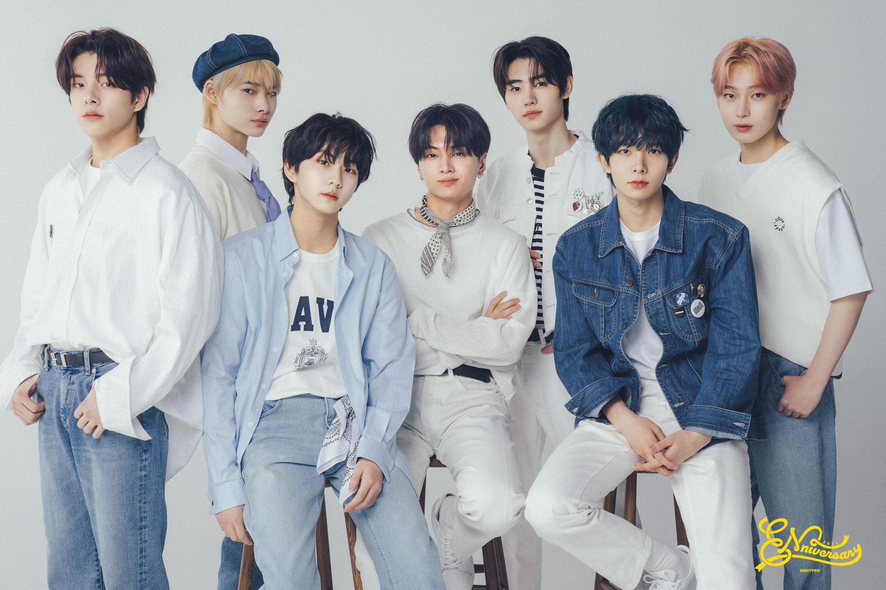
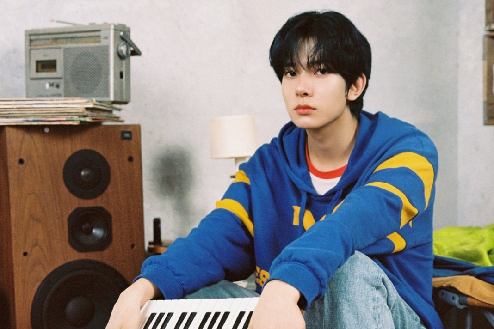
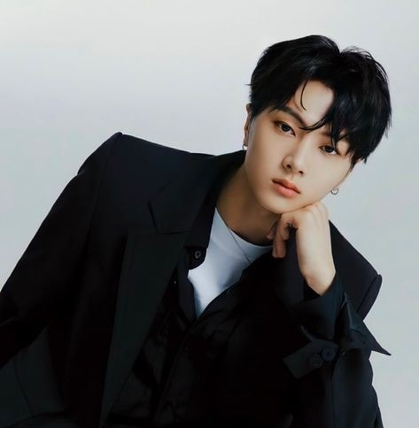
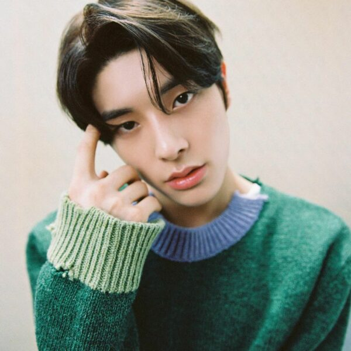
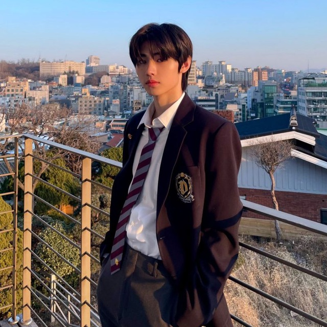
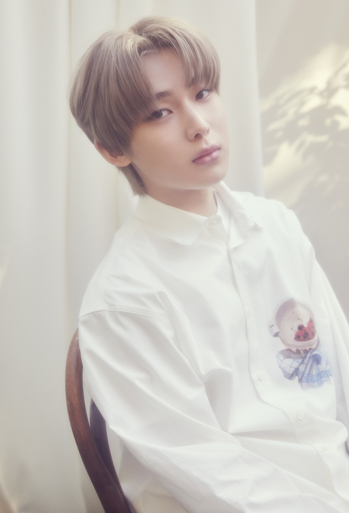
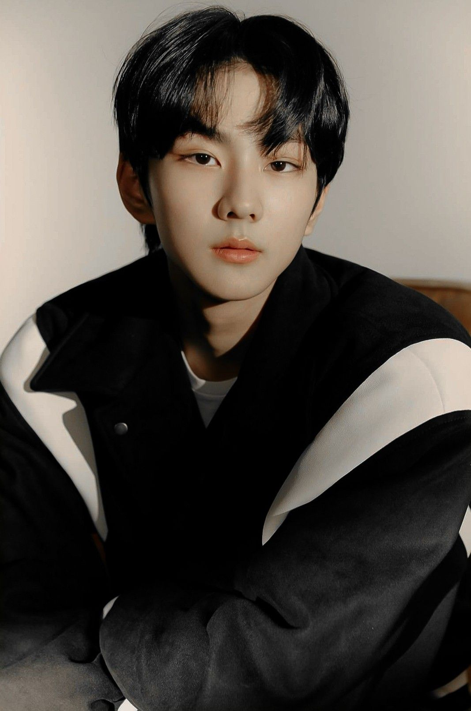
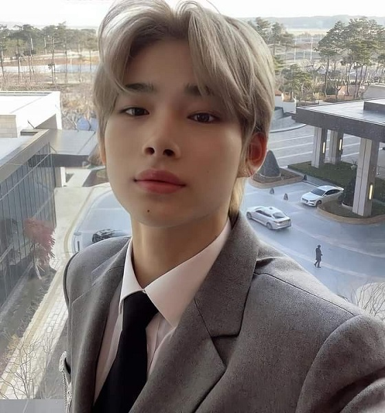

enhypen is a boy group with 7 members who survived at the reality show I-LAND under the company BE:LIFT Lab. the group consists of Heeseung, Jay, Jake, Sunghoon, Sunoo, Jungwon, and Ni-ki. the name enhypen means connection, discovery, and growth. it looks similair to how a hyphen connects words to discover a new meaning, enhypen refers to how the members discovered each other, are connected to one another, and will continue to grow together. the boy group debuted on November 30th, 2020 with their mini-album "BORDER: DAY ONE" and title track "Given-Taken". their fandom name is "engene".

MEMBERS:
HEESEUNG

stage name: Heeseung
birth name: Lee Hee Seung
birthday: Octber 15th, 2001
zodiac sign: Libra
height: 183 cm
nationality: Korean
JAY

stage name: Jay
birth name: Jay Park
korean name: Park Jong Seong
birthday: April 20th, 2002
zodiac sign: taurus
height: 180 cm
nationality: Korean-American
JAKE

stage name: Jake
birth name: Jake Sim
korean name: Sim Jae Yun
birthday: November 15th, 2002
zodiac sign: scorpio
height: 176 cm
born in
nationality: Korean-Australian
SUNGHOON

stage name: Sunghoon
birth name: Park Sung Hoon
birthday: December 8th, 2002
zodiac sign: saggitarius
height: 181 cm
nationality: Korean
SUNOO

stage name: Sunoo
birth name: Kim Seon Woo
birthday: July 24th, 2003
zodiac sign: cancer
height: 177 cm
nationality: Korean
JUNGWON

stage name: Jungwon
birth name: Yang Jung Won
birthday: February 9th, 2004
zodiac sign: aquarius
height: 175 cm
nationality: Korean
NI-KI

stage name: Ni-Ki
birth name: Nishimura Riki
birthday: December 9th, 2005
zodiac sign: saggitarius
height: 183 cm
nationality: Japanese